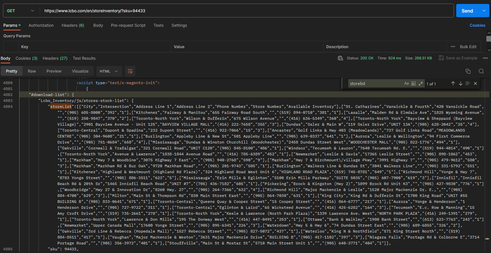
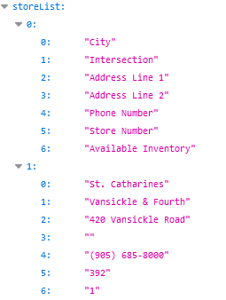
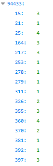

A fundamental feature of my wine app is to only recommend bottles available right now at a store nearby.
LCBO’s product inventory data is live and readily accessible for any given product given the unique SKU number (a 6 digit code). For instance, SKU number 328534 leads you to the inventory page for Jackson-Triggs Cabernet Sauvignon using the URL https://www.lcbo.com/en/storeinventory/?sku=328534. This URL is easy to query considering we only have to change one parameter, assuming we have a list of LCBO’s SKU numbers (see Part 3 of this series for how I got the numbers).
Where my wine?
Unlike the store information, the inventory data is not transferred via a JSON file. There is a link at the page bottom that lets you download the inventory table. However, The link is a “blob” URL which can only be generated by a browser. There are simple python methods to generate the blob URL. Fortunately, I found a better solution hiding in the HTML code!
If you look at the HTML code using Inspect, you’ll find the inventory data is embedded in a large table with thousands of HTML code. I cannot show it here since it is literally over 550,000 characters long. You can certainly regex the inventory data from the embedded HTML code… Perhaps OpenAI can give a hand.
I found a pleasant surprise when cURL-ing the URL on Postman. The HTML code returned contains the inventory table as a JSON in text format! Have a look:

Wow! All we have to do is cURL the inventory page and do a little regex. This can be done entirely in bash and remarkably quickly.
The code
Bash, sed, and regex
The cURL command is fairly simple:
curl --location "https://www.lcbo.com/en/storeinventory/?sku="$1where the variable “1” will be substituted by the SKU number. I need to process the HTML code delivered before we can extract the JSON. This is done using “pipes” represented by the character “|” without quotes. For example, we can add a subsequent command after cURL called “grep” using a pipe as follows:
curl --location "https://www.lcbo.com/en/storeinventory/?sku="$1 \
| tac | tac \
| grep -m 1 'storeList'The backslash “\” lets you continue the command on a new line. “grep” lets you search files or, in this case, HTML text piped from the cURL command. The option “-m 1” is equivalent to “–max-count=1” which says to stop searching after the first detection of the pattern ‘storeList’.
A funny thing happens if we do not include the two piped “tac” commands before grep. The tac command simply reverses the incoming file. Executing two tac commands will return the original cURL output! Read @Kaworu’s for an explanation why this is the case.
The sequence of piped commands will return line 4004, which looks like this:
"storeList":[["City","Intersection","Address Line 1","Address Line 2","Phone Number","Store Number","Available Inventory"],["St. Catharines","Vansickle & Fourth","420 Vansickle Road","","(905) 685-8000","392","1"],["Kitchener","Fairway & Manitou","655 Fairway Road South","","(519) 894-0710","381","1"],["Lasalle","Malden Rd & Elmdale Ave","1825 Wyoming Avenue","","(519) 250-9847","370","2"],["Toronto-North York","Wilson & Dufferin","675 Wilson Avenue","","(416) 636-5349","360","4"],["Toronto-North York","Bayview & Sheppard (Bayview Village)","2901 Bayview Avenue - Unit 125","BAYVIEW VILLAGE MALL","(416) 222-7658","355","3"],["Dundas","Osler & Main W","119 Osler Drive","UNIT 13A","(905) 628-2042","25","4"],["Toronto-Central","Dupont & Spadina","232 Dupont Street","","(416) 922-7066","15","3"],["Ancaster","Golf Links & Hwy 403 (Meadowlands)","737 Golf Links Road","MEADOWLANDS CENTRE","(905) 304-9608","21","1"],["Burlington","Appleby Line & New St","501 Appleby Line","","(905) 639-0337","641","1"],["Aurora","Leslie & Wellington","94 First Commerce Drive","","(905) 751-0684","658","4"],["Mississauga","Dundas & Winston Churchill (Woodchester)","2458 Dundas Street West","WOODCHESTER MALL","(905) 822-1776","494","1"],["Oakville","Cornwall & Trafalgar","321 Cornwall Road","UNIT C120","(905) 845-8100","486","1"],["Windsor","Tecumseh & Lauzon","7640 Tecumseh Rd. E.","","(519) 944-4014","490","1"],["Toronto-North York","Avenue & Lawrence","1838-1844 Avenue Road","","(416) 785-6389","452","1"],["Newmarket","Leslie & Davis","17365 Leslie Street","","(905) 898-1062","453","1"],["Markham","Hwy 7 & Woodbine","3075 Highway 7 East","","(905) 940-2768","590","9"],["Markham","Hwy 7 & Birchmount\/village Pkwy","3991 Highway 7","","(905) 479-9612","580","3"],["Markham","Markham Rd & Bur Oak","9720 Markham Road","","(905) 201-9743","585","1"],["Burlington","Walkers Line & Dundas St","3041 Walkers Line","","(905) 331-5792","551","1"],["Kitchener","Highland & Westmount (Highland Rd Plaza)","324 Highland Road West Unit 6","HIGHLAND ROAD PLAZA","(519) 745-8781","549","1"],["Richmond Hill","Yonge & Hwy 7","8783 Yonge Street","","(905) 886-3511","623","5"],["Mississauga","Erin Mills & Eglinton","5100 Erin Mills Parkway","SUITE 5035","(905) 607-7900","619","3"],["Innisfil","Innisfil Beach Rd & 20th Sr","1465 Innisfil Beach Road","UNIT #7","(705) 436-7182","605","1"],["Pickering","Brock & Kingston (Hwy 2)","1899 Brock Rd Unit K3","","(905) 427-9830","776","1"],["Woodbridge","Hwy 27 & Innovation Dr","8260 Hwy. 27","","(905) 264-7366","632","4"],["Richmond Hill","Major Mackenzie & Leslie","1520 Major Mackenzie Dr. E.,","","(905) 884-4700","629","3"],["Milton","Main St & Thompson Rd","830 Main Street East","","(905) 864-7030","631","1"],["King City","King Rd & Dufferin St","1700 King Road","UNIT #55 BUILDING B","(905) 833-0641","671","1"],["Toronto-Central","Queens Quay & Cooper Street","15 Cooper Street","","(416) 864-6777","217","1"],["Aurora","Yonge & Henderson","1 Henderson Drive","","(905) 727-9722","311","1"],["Toronto-Central","Eglinton & Laird","65 Wicksteed Avenue","","(416) 425-6282","164","3"],["Tecumseh","E.c. Row & Manning","15 Amy Croft Drive","","(519) 735-2661","278","1"],["Toronto-North York","Keele & Lawrence (North Park Plaza)","1339 Lawrence Ave. West","NORTH PARK PLAZA","(416) 249-1391","279","1"],["Toronto-North York","Lawrence & Don Mills","195 The Donway West","","(416) 447-0491","253","1"],["Ottawa","Bank & Walkley","1980 Bank Street","","(613) 523-7763","243","1"],["Newmarket","Upper Canada Mall","17600 Yonge Street","","(905) 895-6341","226","3"],["Waterdown","Hwy 5 & Hwy 6","74 Dundas Street East","","(905) 689-6855","326","2"],["Oakville","3rd Line & Rebecca (Hopedale Mall)","1527 Rebecca Street","","(905) 827-5072","437","1"],["Waterloo","King N & Northfield","571 King Street North","","(519) 884-8511","417","1"],["Vaughan","Major Mackenzie & Weston","3631 Major Mackenzie Drive","BUILDING B","(905) 417-1102","397","3"],["Niagara Falls","Portage Rd & Colborne E","3714 Portage Road","","(905) 356-3972","401","1"],["Stouffville","Main St & Mostar St","5710 Main Street Unit 1","","(905) 640-3771","404","1"]],We could take the above output and, with a little editing, immediately create a JSON. A small snapshot of the JSON is seen below.

There are a number of practical reasons to not do this. For instance, the only data we require is the store number and available inventory. We know the store information from Part 1 of our series and can call upon it with the store number alone. Throwing away redundant data reduces the file sizes and decreases the read time of each file. Furthermore, the JSON structure can be simpler and much more readable with restructuring! Our goal is to rebuild the JSON to look like this:

94433 is the SKU number. The keys and values are simply the store numbers and available inventory, respectively.
sed
“sed” is a UNIX stream editor that lets you search, and find and replace. There is a neat online editor that lets you quickly test your ideas: https://sed.js.org/.
Here is sed piped into action:
curl --location "https://www.lcbo.com/en/storeinventory/?sku="$1 \
| grep -m 1 'storeList' \
| tac | tac \
| sed '$s/,$//; s/\]\]//g; s/\],\[/\n/g; /^$/d'Okay… sed is an alien language when you first see it. Let me break it down. To start, the output from grep is piped to sed for processing. The quoted text after sed is actually several search and replace commands concatenated together. The following text
's/,$//; s/"storeList":\[//g; s/\]\]//g; s/\],\[/\n/g; /^$/d'breaks down into 4 sed commands separated by semicolons:
1. 's/,$//'
2. 's/\]\]//g'
3. 's/\],\[/\n/g'
4. '/^ $/d'An sed command has four components separated by forward slashes “/”:
'[s]ubstitute / Regexp / Replacement / [g]lobal'The substitute and global parameters are represented with s and g. Regexp is the regular expression you’re searching for. Replacement is the text that will substitute the regex expression. Below is an explanation for each command. You can follow along by pasting the output the contents of line 4004 to https://sed.js.org/ and applying the commands below.
- Substitute the last comma at the end of the grep output with nothing.
# ,$ <-- the dollar sign $ says to get the last comma
's/,$//'- Globally substitute the double closing square brackets with nothing.
# Substitute ]] with nothing (i.e., delete ]])
's/\]\]//g'- Globally substitute inner square brackets with a newline.
# Substitute ],[ with \n
's/\],\[/\n/g'- Delete lines with only white spaces or newlines.
'/^ $/d'Here is a sample output of the first three lines after running these sed commands:
"storeList":[["City","Intersection","Address Line 1","Address Line 2","Phone Number","Store Number","Available Inventory"
"St. Catharines","Vansickle & Fourth","420 Vansickle Road","","(905) 685-8000","392","1"
"Kitchener","Fairway & Manitou","655 Fairway Road South","","(519) 894-0710","381","1"
...tail
The “tail” command shows the last few lines of a given file. We pipe the output to “tail” and add a +2 option to return the entire text from line 2 onwards (i.e., delete the first line).
curl --location "https://www.lcbo.com/en/storeinventory/?sku="$1 \
| grep -m 1 'storeList' \
| tac | tac \
| sed '$s/,$//; s/\]\]//g; s/\],\[/\n/g; /^$/d'\
| tail +2Here is the current state of our text file:
"St. Catharines","Vansickle & Fourth","420 Vansickle Road","","(905) 685-8000","392","1"
"Kitchener","Fairway & Manitou","655 Fairway Road South","","(519) 894-0710","381","1"
...More sed!
Our next sed command will take the output and produce the JSON file we desire! Last sed, I promise. Note that we use the -r option with sed to permit extended regular expressions.
curl --location "https://www.lcbo.com/en/storeinventory/?sku="$1 \
| grep -m 1 'storeList' \
| tac | tac \
| sed '$s/,$//; s/\]\]//g; s/\],\[/\n/g; /^$/d'\
| tail +2 \
| sed -r 's/(.*,)([^,]+,[^,]+)$/\2/g; s/"*$//g; s/","/":/g ; 1s/^/{"'$1'":{/; s/$/,/ ; $s/,$/}}/' - Grab the last two columns from each row.
s/(.*,)([^,]+,[^,]+)$/\2/g;Return:
"392","1"
"381","1"
...- Delete the last quotation mark in each row.
s/"*$//g;Return:
"392","1
"381","1
...- Globally replace the regexp (^^^) with the replacement (^^). Sorry, it gets weird referencing punctuations. I’ve added some white spaces for clarity.
s/ "," / ": /g
^^^ ^^Return:
"392":1
"381":1
...- The start of a JSON needs an open curly bracket. Append the following text with the SKU number to the beginning: {“94433”: {
1s/^/{"'$1'":{/; Return:
{"94433":{"392":1
"381":1
...- Add a comma at the end of each row:
s/$/,/Return:
{"94433":{"392":1,
"381":1,
...- Add closing brackets at the end of the file to complete the JSON.
$s/,$/}}/Return:
{"94433":{"392":1,
"381":1,
...
"404":1}}Make it pretty with jq and save!
The jq command reformats the JSON to look pretty. Finally, we save the final output to a JSON file.
#!/bin/bash
curl --location "https://www.lcbo.com/en/storeinventory/?sku="$1 \
| grep -m 1 'storeList' \
| tac | tac \
| sed '$s/,$//; s/"storeList":\[//; s/\]\]//g; s/\],\[/\n/g; /^ $/d' \
| tail +2 \
| sed -r 's/(.*,)([^,]+,[^,]+)$/\2/g; s/"*$//g; s/","/":/g ; 1s/^/{"'$1'":{/; s/$/,/ ; $s/,$/}}/' \
| jq . \
> json/inventory/$1.jsonLoop the script for each SKU number:
In Part 3, I obtain a list of SKU numbers for wines and non-wine beverages. In the script below, the script runs a loop for each SKU number in the file and executes the script made above. The “chmod” command changes permissions to permit write access. We add a sleep command of 1 second to scrape more gently.
#!/bin/bash
chmod +x code/inventory_request.sh
while IFS= read -r line; do
sudo ./code/inventory_request.sh $line
sleep 1
done < json/wine_sku_list.txt
while IFS= read -r line; do
sudo ./code/inventory_request.sh $line
sleep 1
done < json/nonwine_sku_list.txtNext Steps
The last data retrieval is product information which is part 3 of the series. This was the hardest to wrangle!
Once all of the scrapers were nailed down, I wrote a scraper bot that does it for me periodically. The bot also updates my PostgreSQL data base! Everything is automated and hands free. Check out this post to learn how to write one!
Thanks for reading!
Citation
@online{ro2023,
author = {Ro, Stephen},
title = {Scraping {LCBO} {Data} {(Part} 2: {Product} {Inventory)}},
date = {2023-06-10},
url = {https://royourboat.github.io/posts/2023-06-10-lcbo-scraper/},
langid = {en}
}